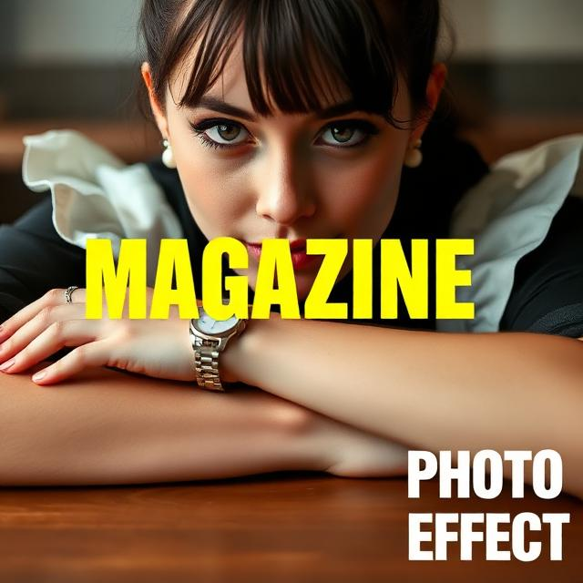
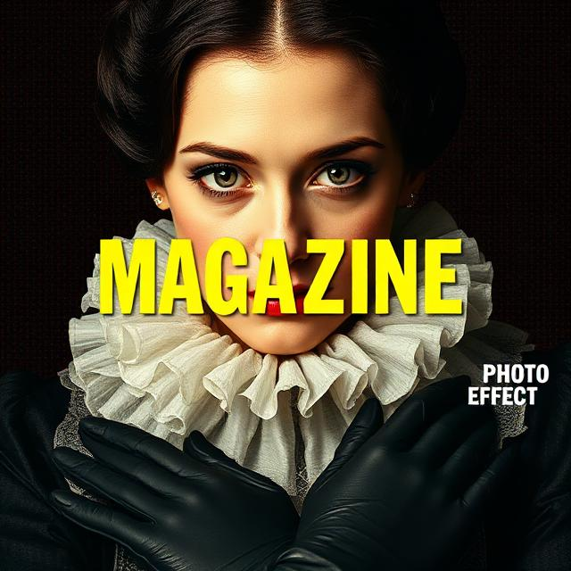
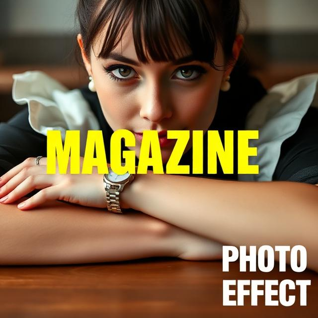
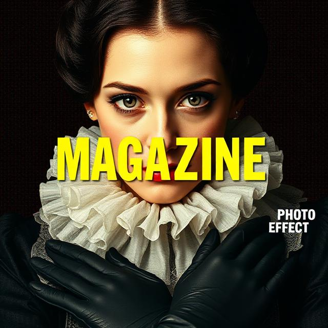

Module 012: This Image Does Not Exist
An interpretation and reconstruction of an image.
THEA3135, Richard Lau
The image below is what I chose to analyze.

This image depicts a young woman staring at us with her arms overlapping on a table and her chin resting on her hands. She is wearing a silver watch and white pearl earrings alongside a black/white maid outfit. Her elbows are out of frame, the top of her head and a small portion of her chest are in the frame.
This photo has a coloured circle halftone effect. There's a big yellow "MAGAZINE" with lots of tracking in a Futura-like sans typeface in the center of the image. There's smaller white type to the bottom-right that says "PHOTO EFFECT."
AI Generated description by ChatGPT:
The image shows a stylized portrait of a woman with dark hair and a historical, ruffled white collar, reminiscent of an Elizabethan-era figure. Her face is centered and intense, with wide eyes and a direct gaze. The entire image is overlaid with a halftone dot pattern, giving it a retro, magazine-print effect. Across her face, bold yellow text spells “MAGAZINE,” while smaller white text on the right reads “PHOTO EFFECT.” She wears black gloves and rests her arms in front, creating a dramatic, editorial-style composition.
AI Generated image with original description:

AI Generated image with AI generated description:

Reflection:
In the generation of the original description, it resembles fashion or lifestyle magazine covers, with bold typography and a central portrait. The watch, pearls, proportion of body in frame of the generated image aligns with the original. In both generated images, the woman is looking at the viewer but lose the halftone effect. In the AI generated description, we see more misinterpretations from the original such as how the arms are crossed as if was an X, an overly frilly collar, and gloves. In both descriptions, we did not mention skin colour, however the woman remained white in all image generations. This tells us about bias in generative systems and visual defaults, as if white skin is the "default" or "neutral."
This image depicts a young woman staring at us with her arms overlapping on a table and her chin resting on her hands. She is wearing a silver watch and white pearl earrings alongside a black/white maid outfit. Her elbows are out of frame, the top of her head and a small portion of her chest are in the frame.
This photo has a coloured circle halftone effect. There's a big yellow "MAGAZINE" with lots of tracking in a Futura-like sans typeface in the center of the image. There's smaller white type to the bottom-right that says "PHOTO EFFECT."
AI Generated description by ChatGPT:
The image shows a stylized portrait of a woman with dark hair and a historical, ruffled white collar, reminiscent of an Elizabethan-era figure. Her face is centered and intense, with wide eyes and a direct gaze. The entire image is overlaid with a halftone dot pattern, giving it a retro, magazine-print effect. Across her face, bold yellow text spells “MAGAZINE,” while smaller white text on the right reads “PHOTO EFFECT.” She wears black gloves and rests her arms in front, creating a dramatic, editorial-style composition.
AI Generated image with original description:

AI Generated image with AI generated description:

Reflection:
In the generation of the original description, it resembles fashion or lifestyle magazine covers, with bold typography and a central portrait. The watch, pearls, proportion of body in frame of the generated image aligns with the original. In both generated images, the woman is looking at the viewer but lose the halftone effect. In the AI generated description, we see more misinterpretations from the original such as how the arms are crossed as if was an X, an overly frilly collar, and gloves. In both descriptions, we did not mention skin colour, however the woman remained white in all image generations. This tells us about bias in generative systems and visual defaults, as if white skin is the "default" or "neutral."